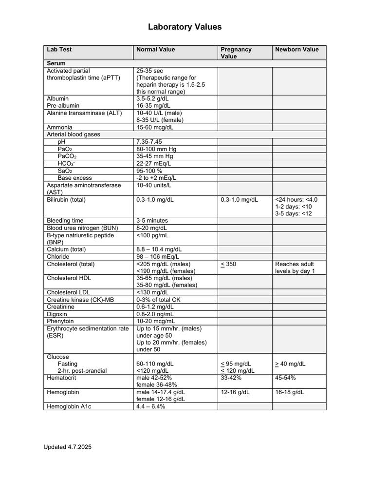

- For reference throughout the chapter, see Fig. 10.2 .
Picture thisApproximate values for the components of blood in a normal adult.
The numbers on a lab slip. Sodium through white cells — what each one means, what moves it up, what moves it down, and when to worry.
| Method | Used for | Key nursing points |
|---|---|---|
| Venipuncture | Most serum and plasma studies | Apply the tourniquet no longer than 1 minute. Never draw above an IV that is infusing, an AV fistula, a mastectomy side, or a paralyzed arm. Fill tubes in the correct order and invert — do not shake. Label at the bedside. |
| Capillary (finger or heel stick) | Glucose, hematocrit, newborn screening | Warm the site, wipe away the first drop, don’t squeeze hard (squeezing dilutes the sample with tissue fluid). Heel stick only on the lateral heel in infants. |
| Arterial puncture | Arterial blood gases | Perform the Allen’s test first. Sample goes on ice to the lab. Hold direct pressure 5 minutes — 20 minutes if the client is on an anticoagulant. |
| Central venous access device | Frequent draws, poor peripheral access | Stop any infusion, flush, and discard the first waste volume per policy, then draw and flush again. A sample from the lumen carrying the medication gives a falsely high result. |
| Test | Male adult | Female adult |
|---|---|---|
| Hemoglobin (altitude dependent) | 14–18 g/dL (140–180 g/L) | 12–16 g/dL (120–160 g/L) |
| Hematocrit (altitude dependent) | 42%–52% (0.42–0.52) | 37%–47% (0.37–0.47) |
| Lipid | Reference interval |
|---|---|
| Total cholesterol | Less than 200 mg/dL (less than 5.2 mmol/L) |
| LDL cholesterol | Less than 130 mg/dL (less than 3.37 mmol/L) — optimal is under 100 |
| HDL cholesterol | Male: above 45 mg/dL · Female: above 55 mg/dL — higher is protective |
| Triglycerides | Male: 40–160 mg/dL (0.45–1.81 mmol/L) · Female: 35–135 mg/dL (0.40–1.52 mmol/L) |
Ranges vary slightly by lab and by edition — check the interval printed on your own lab report and your Saunders Table 10.3.
| HbA1c | eAG | SI |
|---|---|---|
| 5% | 97 mg/dL | 5.4 mmol/L |
| 6% | 125 mg/dL | 6.9 mmol/L |
| 7% | 154 mg/dL | 8.6 mmol/L |
| 8% | 183 mg/dL | 10.2 mmol/L |
| 9% | 212 mg/dL | 11.8 mmol/L |
| 10% | 240 mg/dL | 13.3 mmol/L |
| 11% | 269 mg/dL | 14.9 mmol/L |
| 12% | 298 mg/dL | 16.6 mmol/L |
Normal under 5.7% · Prediabetes 5.7–6.4% · Diabetes 6.5% or higher. Most adults with diabetes aim for under 7%. HbA1c reflects the last 3 months, so it can’t be faked by fasting the morning of the draw.
Source: American Diabetes Association (2020); Pagana & Pagana, Mosby’s Diagnostic and Laboratory Test Reference.
°F → °C: (°F − 32) × 5/9 = °C
98.2° F → (98.2 − 32) × 5/9 = 36.8° C
°C → °F: (°C × 9/5) + 32 = °F
38.6° C → (38.6 × 9/5) + 32 = 101.5° F
| Category | Systolic | Diastolic |
|---|---|---|
| Normal | Less than 120 | and less than 80 |
| Elevated | 120–129 | and less than 80 |
| Stage 1 hypertension | 130–139 | or 80–89 |
| Stage 2 hypertension | 140 or higher | or 90 or higher |
| Hypertensive crisis | Over 180 | and/or over 120 — needs prompt medication changes; call the provider |
From American College of Cardiology, 2017 — New ACC/AHA High Blood Pressure Guidelines Lower the Definition of Hypertension.
Scenario: a client arrives from the postanesthesia care unit (PACU) at 1300, and the nurse is monitoring vital signs.
| Vital sign | 1300 | 1330 |
|---|---|---|
| Temperature | 37.2° C (98.9° F) orally | 36.8° C (98.2° F) orally |
| Heart rate | 98/min | 118/min |
| Respiratory rate | 14/min | 18/min |
| Blood pressure | 142/78 mm Hg | 95/54 mm Hg |
| Oxygen saturation | 95% on 3 L nasal cannula | 92% on 3 L nasal cannula |
For children, or anyone who can’t tell you, use the FLACC® scale (face, legs, activity, cry, consolability) or the FACES® scale. Both are scored 0–10, with 0 representing no pain.
| NSAIDs | Acetylsalicylic acid | |
|---|---|---|
| Adverse effects | Gastric irritation Sodium and water retention Blood dyscrasias Tinnitus Pruritus | Gastric irritation Flushing Tinnitus |


